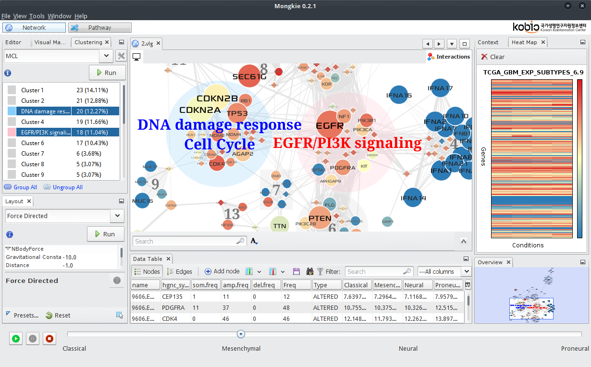

Modular Network Generation and Visualization Platform with Knowledge Integration Environments

Introduction
Network-based integrative analysis is a powerful technique for deducing biological interpretations from multi-layered omics data such as somatic mutations, copy number variations, and gene expression data. However integrated analysis of multi-omics data is quite complicated and can hardly be done in a fully automated way. Thus, a powerful interactive visual mining tool is much needed in analyzing a huge amount of heterogeneous data such as the TCGA projects.
MONGKIE is an application that integrates network visualization with data analysis tools in a single platform. The visualization unit supports sophisticated models for describing biological networks as well as various visualization options (e.g. Data-to-Visual mapping and gene expression overlay) for displaying multi-omics data. In addition, we implemented in-house tools for network analysis including network clustering and over-representation analysis.
Video Demo
Data files used in the demo
- ESC.graphml
- ESC_total_node.csv
- ESC_total_relation.csv
- exp.csv
- GSE15355.csv
- symbol2uniprot.csv (should be imported as a node attribute before the GO enrichment analysis)
Quick Start
See Installation for details.
- Download the latest release of a ZIP distribution for your OS.
- Unzip the downloaded file into any directory.
- Run
mongkie/bin/mongkiein Linux,mongkie\bin\mongkie.exein Windows, andmongkie.app/Contents/MacOS/mongkiein Mac OS X.
What's next? Go to the Tutorial site.
>>Enjoy!
License
MONGKIE is distributed under the GNU AGPL V3 license with exception of some external libraries that are available under their own licenses.
Visit <http://yjjang.github.io/mongkie> for details.
Copyright (C) 2015 Yeongjun Jang
MONGKIE is free software: you can redistribute it and/or modify
it under the terms of the GNU Affero General Public License as published by
the Free Software Foundation, either version 3 of the License, or
(at your option) any later version.
MONGKIE is distributed in the hope that it will be useful,
but WITHOUT ANY WARRANTY; without even the implied warranty of
MERCHANTABILITY or FITNESS FOR A PARTICULAR PURPOSE. See the
GNU Affero General Public License for more details.
You should have received a copy of the GNU Affero General Public License
along with this program. If not, see <http://www.gnu.org/licenses/>.